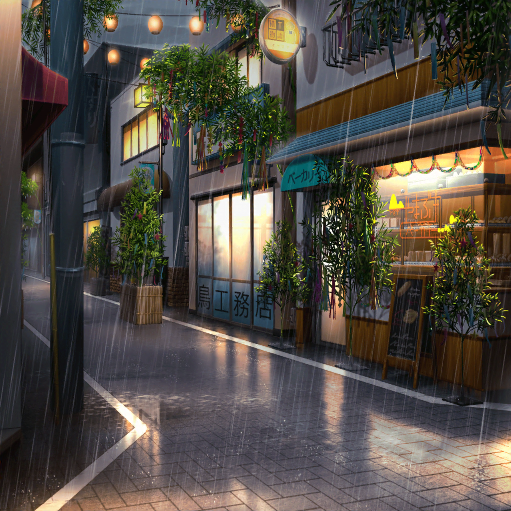

商店街
日菜
わあ〜、すっごい人！
けど、たのしそーっ！ まずはどこからまわろーかな？
一番るんっとくる場所から……

日菜
……わわっ、雨！？
嘘でしょ〜！？ 傘なんか持ってないよ〜！
日菜
とりあえず、雨宿りできそうな場所にいかないと〜！！

ファーストフード店
彩
いらっしゃいませー！
……って、日菜ちゃん！
日菜
あれっ？ 彩ちゃん！
何してるの？
彩
ここでアルバイトしてるんだ。
最近はあんまり出られてなかったんだけど……
日菜
そうなんだ。あたしはお客さーん♪
ちょっと雨宿りさせてー
彩
うん、もちろんっ！ せっかくの七夕祭りなのに、
残念だね。日菜ちゃんは、誰かと一緒？
日菜
……ううん。おねーちゃんを誘ったんだけど、
断られちゃった
彩
そっか。残念だったね……
日菜
ま、しょーがないよね〜。
ところでところで、彩ちゃんのオススメはある？
彩
そうだなあ……あっ、今ポテトの増量キャンペーンを
やってるの！ Mサイズの値段でLサイズのポテトが
食べられるんだよっ！
日菜
いいねー、るんっとくるキャンペーンだね！
じゃあ、それとコーラにしようかな
彩
はーい！ ポテトLとコーラ、お願いしまーす！
花音
は、はーいっ！
かしこまりました！
日菜
あれは、花音ちゃん？
花音ちゃんもバイトしてたんだ
彩
うん、そうだよ！
それじゃあ、ポテトは揚げたてをもっていくから
席でお待ち下さい♪
日菜
……はあ。雨はやんだみたいだけど……
全然、七夕祭りの気持ちになれないなー……
日菜
もう、帰ろうかな……

商店街
紗夜
……すごい人だと思ったら、
今日は七夕祭りの日なのね。早く頼まれた買い物を
済ませて帰らないと……
紗夜
（日菜……誰かと七夕祭りに来ているのかしら？）
紗夜
（やっぱり、こういう雰囲気は苦手ね）
紗夜
はあ……
紗夜
あら？
あそこにいるのは、日菜……？
紗夜
日菜……っ！
人が多すぎて声が届かない……！
紗夜
はあ……日菜、どこへいったのかしら
彩
あれ？ 紗夜ちゃん！
紗夜
丸山さん。それに、松原さん
彩
こんにちは。紗夜ちゃん、どうしたの？
紗夜
私は、母から買い物を頼まれて……
それより丸山さん、日菜に七夕祭りに誘われなかった？
彩
私？ ううん。私は元々今日バイトのシフトだったから。
それに、日菜ちゃん、紗夜ちゃんと七夕祭りに行けなくて
残念がってたよ？
紗夜
日菜が……？
彩
うん。さっきお店に雨宿りにきてくれたんだけど、
その時にそんな風に話してたよ
紗夜
そう……私は人混みやお祭りの雰囲気が得意ではないから、
丸山さん達を誘ったほうがいいと言ったんだけど……
彩
紗夜ちゃん。日菜ちゃんはきっと、私達じゃなくて、
紗夜ちゃんと一緒に行きたかったんだよ！
花音
う、うん……！ 私もそう思うよ。
雨宿りしてる時の日菜ちゃん、ちょっとさみしそうだったし……
紗夜
日菜……